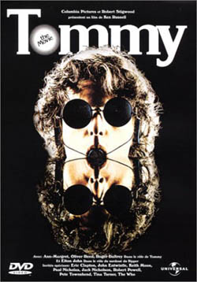

Chapter 7. Tommy: The Beginnings
In 1969 one of the big three rock groups of the day (the Who) released the very first rock opera double album: Tommy. Most rock albums previously were just a collection of songs, whereas Tommy presented a complete (if disturbing) story.
"Tommy is blind, deaf and dumb, but there is nothing wrong with him. As a small child, he accidentally witnessed the murder of his father by his stepfather. His mother and stepfather told him to forget everything he had seen and heard, and to never talk about it; but Tommy carried it to the extreme, turned inward, and stopped seeing, hearing or speaking at all. He suffered much while growing up, and finally found happiness in, of all things, playing pinball. When he became the world champion pinball player it brought his family fame and fortune. After being spontaneously healed, he began to teach others of his unique perspective on life, eventually becoming a religious cult figure."
~ The Internet Movie Database (www.imdb.com)
 In 1975 Ken Russell, the renowned but eccentric film director assembled a large cast of well known actors and musicians to make an exotic film version of the complete musical. The cast included such figures as Eric Clapton, Elton John, Tina Turner, Jack Nicholson, Oliver Reed, Ann-Margaret and all the band members from the Who.
Unlike O Lucky Man we had all gone to see Tommy and thought it was tremendous. One member of Genesis Theatre, Norman Partington, thought he could get a message through to Pete Townsend to perhaps stage Tommy. This would be the first stage production of Tommy and a major coup for us. We had already been invited back to do the next year's amateur festival in 1978, and so it was pretty much decided then and there that Tommy would be the one we would do.
Pete finally agreed to give us the go-ahead, and it looked like being an amateur premier, but only if we got our skates on, as a society down south had also been given permission.
In the case of this show, we already decided it was too big a deal to just be a one-day event and would have to be done elsewhere too. Initially the Royal Exchange was going to be the first production and the other longer run at the Oldham Grange Arts would follow on. Things didn't go exactly to plan. The order of the events changed somewhere along the way as another event preceded all of them...